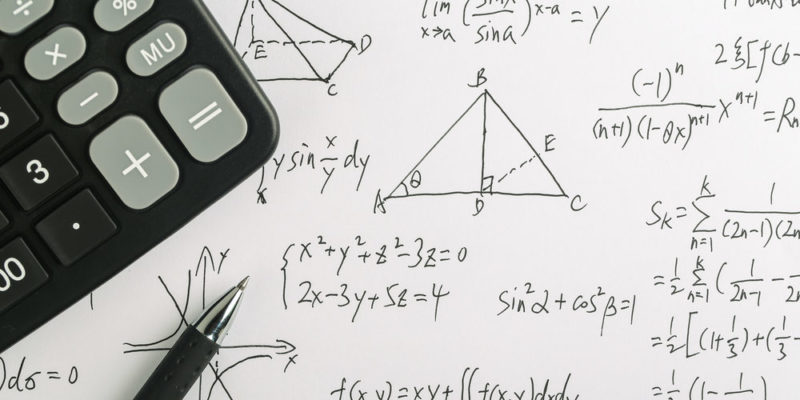

| Otras materias | Ilustracion | Informacion |
|---|---|---|
|  | Matematicas es una materia que en lo personal en la primeria me gustaba mucho, ya que era facil de entender pero en la universidad si volvio muy dicil de aprender, ya que se ven muchas formulas, sin embargo gracias a las matematicas basicas somos capaces de realizar tareas de la vida cotidiana, como comprar, contar, vender entre otras cosas. |